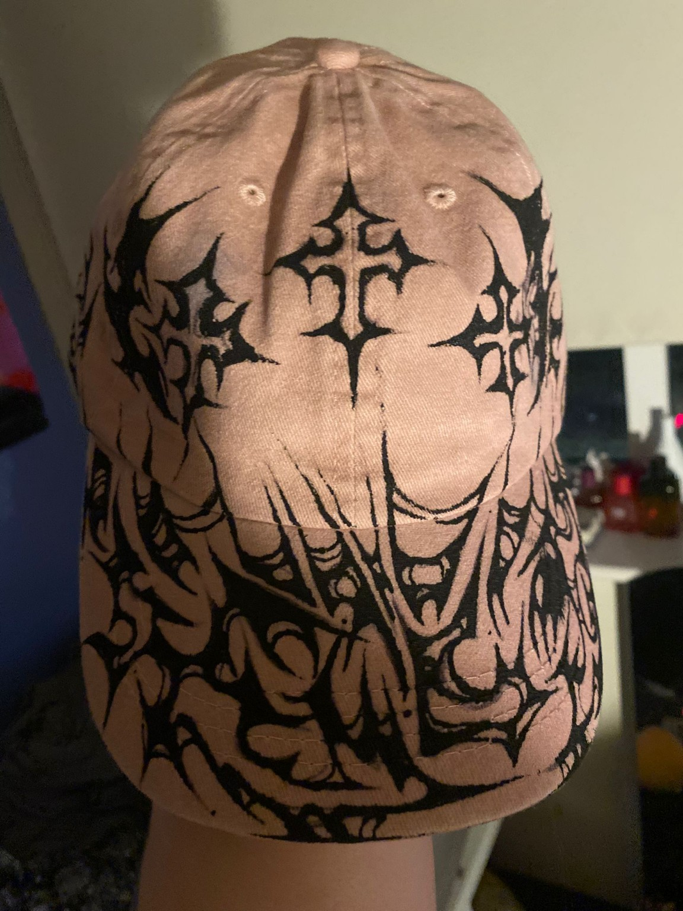
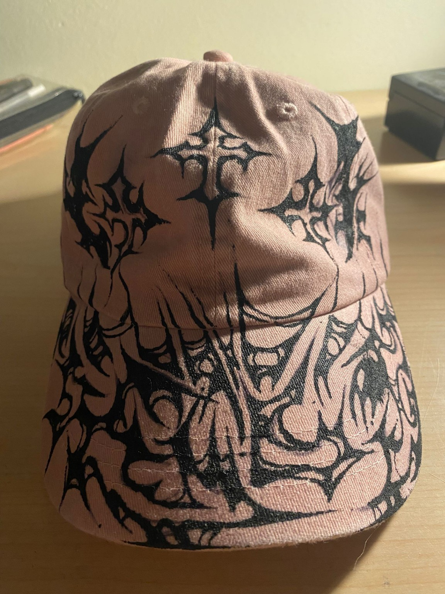
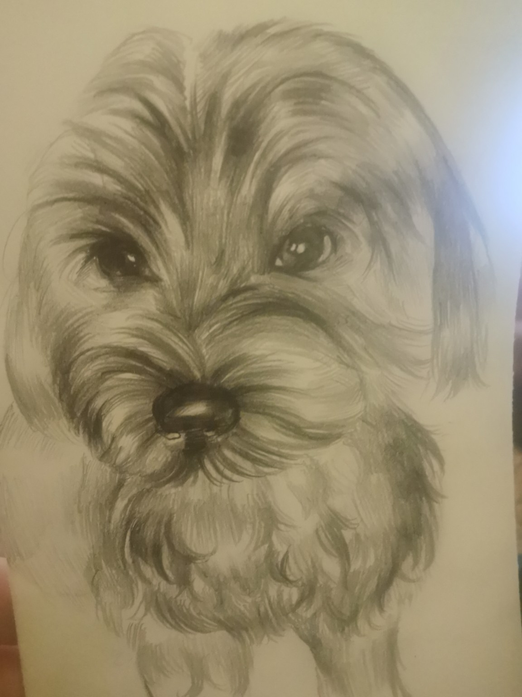
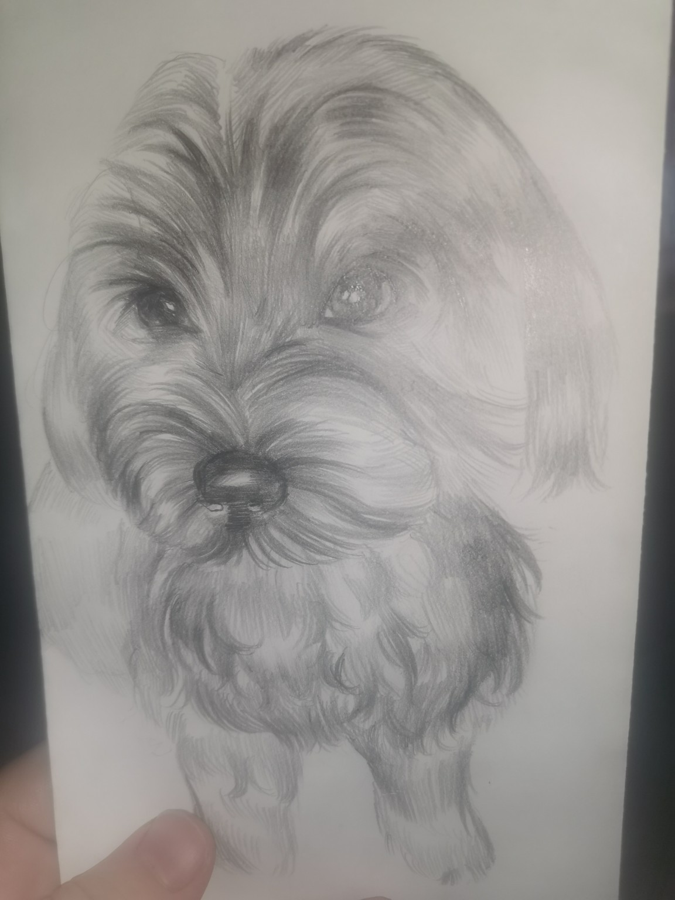

Hand-Drawn Cap Design
Custom textile artwork with bold black graphic styling.
This page shows some early examples of Anabelle’s work. More pieces, categories and finished projects will be added here over time.

Custom textile artwork with bold black graphic styling.

A second angle to show how the artwork wraps across the material.

Pencil portrait study with strong texture and eye detail.

Another example of soft observational pet portrait work.
This gallery will later expand with more artwork categories, finished commissions, portrait examples, character designs and additional illustration projects.